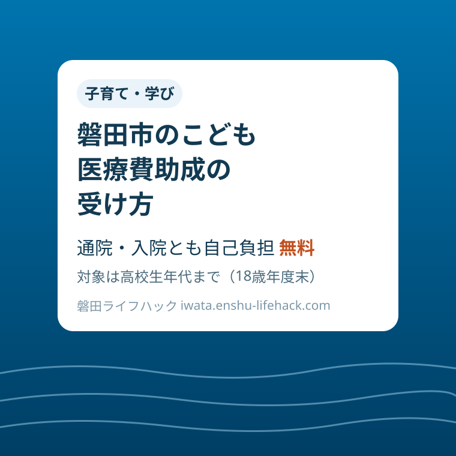

子育て・学び
磐田市のこども医療費助成｜高校生年代まで通院・入院が無料、受給者証と払い戻しの手続き

この記事の要点
Q. 磐田市のこども医療費は、いくらかかるの？
A. 高校生年代まで、通院・入院とも自己負担は無料です（入院の食事療養費も対象）。受給者証の発行申請をして、受診時に提示します。県外受診など証を使えなかった分は、受診日から1年以内の払い戻し申請で戻ります。
導入——無料でも、受給者証がなければ始まらない
子どもが熱を出して小児科へ行く。磐田市では、高校生年代までのこどもの医療費は、通院も入院も自己負担が無料です。ただし、この「無料」は自動的には始まりません。受給者証の発行申請をして、受診のときに提示するところまでが、一つの手続きとしてつながっています。
この記事は、磐田市のこども医療費助成について、「誰が対象で、何が無料になり、受給者証をどうもらい、使えなかったときはどう取り戻すか」を順番に整理した案内です。金額の話だけなら一行で終わりますが、実務でつまずくのは、県外で受診したとき、学校でケガをしたとき、保険が変わったときといった、例外の場面です。
根拠にするのは、磐田市公式ページ「こども医療費」（ページ番号1001766、2026年6月15日更新）と、同ページに掲載されている資料「医療費が高額になる場合」です。あわせて、静岡県公式ページ「こども医療費助成事業」で、県の標準的な自己負担の形も確認しました。
先に結論を書きます。対象は、磐田市に住民票があり、各種健康保険に加入している、高校生年代以下（18歳到達後最初の3月31日まで）のこどもです。自己負担額は通院・入院とも無料で、入院の食事療養費も助成の対象です。窓口はiプラザ（総合健康福祉会館）3階のこども未来課（電話0538-37-4896）と、各支所の市民生活課です。
そして、無料の仕組みには裏側があります。受給者証を使わなかった受診、県外での受診などは、その場では無料にならず、後日の払い戻し申請で精算します。申請の期限は受診日・入院日から1年以内です。この「1年」という期限と、領収書を捨てないことが、この制度でいちばん実務的な注意点です。
まず、公式資料から事実を整理する
市の説明では、助成の対象になるには三つの条件を満たすことが必要です。磐田市に住民票があること、高校生年代以下（18歳到達後最初の3月31日まで）のこどもであること、各種健康保険に加入していることです。外国籍のこどもの場合は、3カ月を超える在留資格が必要とされています。
助成の内容は単純です。0歳から18歳到達後最初の3月31日まで、通院は無料、入院も無料で、入院については食事療養費も助成の対象になります。県の案内では、県内の標準は入院が1日あたり500円、通院が1回につき500円（月5回目からは無料）とされ、市町が独自に上乗せして自己負担なしにすることもある、と説明されています。磐田市は、その上乗せで通院・入院とも無料にしている自治体の一つです。
受給者証の発行申請に必要なものは、お子さまのマイナポータルの資格情報画面または資格確認書、お子さまの在留カードや特別永住者証明書（外国籍の場合）、来庁者の本人確認資料（運転免許証やマイナンバーカードなど）です。再発行の場合も同様とされています。以前は健康保険証のコピーが中心でしたが、いまの市の案内は資格確認の方法が新しい形に置き換わっています。
この置き換えには理由があります。市は、令和7年12月1日に全ての健康保険証の有効期限が切れることに伴い、同年12月2日以降は従来の健康保険証が利用できなくなるため、手続きに必要なものが変更となった、と明記しています。以降はマイナ保険証（健康保険証の利用登録がなされたマイナンバーカード）を基本とする仕組みへ移行していきます。申請の持ち物を確認するときは、古い案内ではなく現在のページを見る必要があります。
保護者の氏名や加入している保険が変わったときも、手続きが必要です。変更の申請には、こども医療費受給者証と、お子さまのマイナポータルの資格情報画面または資格確認書、来庁者の本人確認資料を持っていきます。就職や転職で保険が切り替わった直後の受診は、証の情報と実際の保険が食い違いやすい時期です。切り替えが決まったら、受診の前に変更を済ませておく方が安全です。
申請を代わりに行う人が、お子さまと同一世帯以外の場合は、委任状が必要です。対象になるのは、受給者証の交付申請、再交付申請、記載事項等の変更届、こども医療費助成申請の四つです。祖父母など別世帯の家族が窓口に行く場面では、当日に「委任状が要ります」と言われて出直すことのないよう、市のページから様式を先に用意しておきます。
窓口は複数あります。本庁側はiプラザ（総合健康福祉会館）3階のこども未来課で、電話は0538-37-4896、ファクスは0538-37-4631です。このほか、福田支所1階の市民生活課（電話0538-58-2374）、竜洋支所1階の市民生活課（電話0538-66-9109）、豊田支所（アミューズ豊田内）の市民生活課（電話0538-36-3150）、豊岡支所1階の市民生活課（電話0539-63-0020）でも手続きができます。

受診のときの使い方は、医療機関の窓口で、資格の確認ができるものと一緒にこども医療費受給者証を提示することです。提示できれば、その場で自己負担は無料になります。逆に言えば、提示できなかった受診は、その場では通常の自己負担を支払い、後で述べる払い戻しの手続きに回ります。受診の前に、証が財布や母子手帳ケースのどこにあるかを決めておくことが、そのまま家計の手間を減らします。
払い戻しになる場面——無料の例外は「証を使えなかったとき」
市が払い戻しの手続きが必要な場合として挙げているのは、受給者証を使用しなかったとき（高額療養費制度を利用する場合も含む）、県外で受診したとき、保険が適用される補装具を購入したとき、公費負担医療（療育医療、特定疾患、自立支援医療など）で負担額を一部支払ったとき、などです。旅行先での急な受診や、証の持参忘れが、ここに当てはまります。
払い戻しの申請に必要なものは、こども医療費受給者証、お子さまのマイナポータルの資格情報画面または資格確認書、在留カードや特別永住者証明書（外国籍の場合）、来庁者の本人確認資料に加えて、領収書と、保護者（受給者）の預金通帳です。領収書はレシートでは不可と明記されています。受診のレジで出る小さなレシートだけを残して、正式な領収書をもらい忘れるのが典型的な失敗です。
期限は、受診日・入院日から1年以内が助成期限です。1年は長く見えますが、県外受診の領収書は旅行の書類と一緒にしまい込まれやすく、気づいたときには期限が近づいていることがあります。帰省や旅行で受診したら、帰宅した週のうちに領収書を分けて保管し、申請まで済ませてしまうのが確実です。
保険証を持たずに受診して窓口で10割を負担した場合は、追加の書類があります。病院から保険分（7割または8割）のみ返金を受けた場合は、その2割または3割の領収書が、保険者（健康保険組合）から保険分の返金を受けた場合は、支給決定通知書が必要です。どちらから返金を受けたかで持ち物が変わるので、返金の書類は捨てずに領収書と一緒にしておきます。
保険が適用される補装具代の払い戻しでは、医師の指示書のコピー、領収書のコピー、保険者からの給付金額が分かるもの（支給決定通知など）が追加で必要です。指示書や領収書の原本を保険者へ提出する場合は、先にコピーを取っておくよう、市の資料でも注意されています。

助成の対象にならないものも、先に知っておく必要があります。保険診療以外の経費、たとえば特定初診料、入院証明書料、健診代、予防接種代は対象外です。第三者行為（交通事故など）による傷病の医療費も対象になりません。「無料」と聞いても、保険診療の自己負担分への助成だという線引きは変わりません。
もう一つ、間違えやすいのが学校でのケガです。学校等の管理下におけるケガ等で、日本スポーツ振興センターの災害給付制度が適用される医療費については、医療機関等で受給者証を提示しないでください、と市は明記しています。受給者証を使用した後に同制度の適用の可能性が発覚した場合は、制度への切替依頼と、こども医療費の返還依頼が行われることもあります。学校でケガをしたと聞いたら、受診の前に学校へ確認するのが順番です。
医療費が高額になる場合——高額療養費との組み合わせ方
入院や手術で医療費が高額になり、高額療養費制度に該当した場合は、進み方が三通りに分かれます。市の資料に沿って整理します。一つ目は、健康保険限度額適用認定証を使用する場合です。保険者から認定証の交付を受け、医療機関の窓口で提示して限度額までの自己負担分を支払います。このとき、こども医療費受給者証は使用しません。
その場合の精算は、受診日の翌月以降に、市へ自己負担分の払い戻しの手続きをします。申請日の翌月末に、自己負担分が市から保護者（受給者証の保護者欄に記載がある方）の口座へ振り込まれます。期限は受診日から1年以内です。入院の退院直後は手続きが重なる時期ですが、振込までの流れが見えていると、家計の見通しは立てやすくなります。
二つ目は、限度額適用認定証を使用せず、保険診療の自己負担額を自費で支払った場合です。先に加入している保険者へ高額療養費の申請を行い、保険者から高額療養費支給決定通知が届いてから、市への払い戻しの手続きをします。通知書が持ち物になるので、届いたら領収書と一緒に保管します。
三つ目は、限度額適用認定証を使用せず、こども医療費受給者証を使用した場合です。この場合は、市から郵送される委任状等を記入して返送し、市が保険者へ委任状と必要書類を提出し、保険者が高額療養費を市へ支払う流れになります。市から委任状が郵送されるまで、受診日から半年程度かかることがあるとされています。保険者が被保険者（保護者）へ直接高額療養費を支払った場合は、市へ返金する必要が生じることもあります。
三通りの違いは、「窓口で何を提示したか」で決まります。入院が決まったら、受診の前に、限度額適用認定証を使うかどうかを保険者と市の窓口の案内で確認しておくと、当日の窓口での迷いがなくなります。市の資料「医療費が高額になる場合」は、この三通りを一枚にまとめたもので、入院前の家族の確認資料として手元に置く価値があります。
磐田の暮らしに置き換える——出生・転入・保険変更のタイミング
受給者証の申請が生活の動きと重なるのは、出生と転入のときです。どちらも届出が重なる時期で、医療費の申請だけが後回しになりがちです。生まれた子が初めて小児科にかかるのは、届出からそう遠くない時期です。出生の手続きの流れの中に、こども医療費の申請を一行足しておくと、最初の受診で証がない、という事態を避けられます。
転入の場合は、前の自治体の受給者証は磐田市では使えません。県外から転入した家庭はもちろん、県内の他市からの転入でも、受給者証は自治体ごとの発行です。転入の届出と並べて申請し、県外受診の払い戻しとは話が別であることを押さえておきます。転入前の受診分は前の自治体の制度で、転入後の受診分は磐田市の制度で考えるのが基本です。
高校生年代の終わりも、意識しておきたい節目です。助成は18歳到達後最初の3月31日までで、学年で区切られます。進学や就職で生活が変わる春に、医療費の扱いも変わります。卒業後の受診は通常の保険診療の自己負担に戻るので、継続して通院している場合は、年度末の前に主治医と薬の区切りを確認しておくと安心です。
市の資料には、適正な受診へのお願いも載っています。かかりつけ医を持つこと、ジェネリック医薬品を活用すること、休日・夜間にこどもの急な病気で心配なときは、まず電話相談をしてみることです。相談先として、静岡こども救急電話相談（#8000、または054-247-9910）が案内されており、対象は概ね15歳までのこどもの保護者、相談時間は平日が18時から翌朝8時、土曜が13時から翌朝8時、日曜・祝日（年末年始を含む）が8時から翌朝8時です。無料の制度を長く維持するための呼びかけとして、市の資料が受診の仕方まで含めて案内している点は、この制度の性格をよく表しています。
評価——良い点と、注文したい点
良い点は、助成の内容が「通院・入院とも無料、食事療養費も対象」と一表で言い切られていることです。県の標準（入院500円／日、通院500円／回）と比較する案内も県のページにあり、磐田市の上乗せの位置づけが外から確認できます。対象の三条件も箇条書きで明確で、自分の家庭が当てはまるかをその場で判定できます。
良い点はもう一つ、例外の手続きまで同じページに収まっていることです。払い戻しの持ち物、1年という期限、高額療養費の三通りの流れ、学校のケガでは証を使わないという注意まで、受給者証の発行と同じ場所で読めます。制度の利用で困るのは例外の場面なので、例外が公式に書かれていること自体が実用的な価値です。
注文したい点は、申請の入口が「受給者証発行」という見出しで、出生や転入の届出の流れからは見つけにくいことです。「こどもが生まれたとき」「磐田市へ転入したとき」に必要な手続きの一覧から、この申請へ直接たどれる案内があると、申請漏れはもっと減るはずです。制度の存在を知っている人向けのページ構成になっている点は、もったいなく感じます。
注文したい点はもう一つ、持ち物の「マイナポータルの資格情報画面」という表現が、初めての人には分かりにくいことです。どの画面を開き、何を見せればよいのか、画面の例が一枚あるだけで、窓口でのやり取りはかなり短くなります。健康保険証が使えなくなった移行期だからこそ、代わりの見せ方の案内は手厚い方が助かります。
対案・結論——迷ったら「証を出すか、先に聞くか」で分ける
対案・結論として、この制度の使い方は二つの判断に集約されます。通常の通院・入院では受給者証を提示して無料にする。学校のケガ、交通事故、県外受診、高額療養費が絡む場面では、その場で判断せず、先に学校や保険者、市の窓口へ確認する。この切り分けだけで、返還や期限切れといった大半の困りごとは避けられます。
申請そのものは難しくありません。対象の三条件を確認し、資格情報画面または資格確認書と本人確認資料を用意して、iプラザ3階のこども未来課か最寄りの支所で申請する。あとは受診のたびに証を提示するだけです。手続きの山は、最初の発行と、保険が変わったときの変更の二か所だけです。
払い戻しになりそうな受診をしたら、その日のうちに領収書（レシート不可）を分けて保管し、1年の期限を待たずに申請する。県外受診と補装具と公費負担医療の一部負担は、帰宅後の家計の整理と一緒に済ませる習慣にすると、期限切れの心配はほぼなくなります。
確認する順番
- 対象の三条件（磐田市の住民票・高校生年代以下・健康保険への加入）を確認する
- 資格情報画面または資格確認書と、来庁者の本人確認資料を用意し、iプラザ3階のこども未来課（0538-37-4896）か各支所で受給者証の発行を申請する。別世帯の人が行く場合は委任状も用意する
- 受診のときは、資格の確認ができるものと一緒に受給者証を提示する（通院・入院とも無料）。学校のケガと交通事故では提示せず、先に関係先へ確認する
- 県外受診や証を使わなかったときは、領収書（レシート不可）と通帳などを揃え、受診日から1年以内に払い戻しを申請する
- 加入保険や保護者氏名が変わったら、受給者証と資格情報を持って変更の手続きをする
家族で共有するための記録
受給者証は、誰が受診に連れて行くかで所在が曖昧になりやすい書類です。保管場所を一つに決め、両親や祖父母など連れて行く可能性のある家族全員が場所を知っている状態にしておくことをおすすめします。証がない受診は、その場で無料にならず払い戻しの手続きが増えるので、所在の共有そのものが節約になります。
県外で受診したときの領収書は、旅行の領収書と分けて、受診日と医療機関名をメモした封筒に入れておきます。払い戻しの期限は受診日から1年以内です。家族の誰が見ても「これは払い戻し待ちの領収書だ」と分かる形にしておくと、申請漏れを防げます。
保険が切り替わったときは、切り替えの日と、新しい保険の資格を確認した日をメモに残します。変更の手続きをした日も書き添えておくと、切り替え前後の受診分がどちらの扱いになるか、窓口で説明しやすくなります。
大石の視点
大石の視点として、この制度で見落とされがちなのは、金額の大きさではなく「証の提示」という一段の手続きです。無料という言葉だけが先に伝わり、受給者証の申請が必要なこと、学校のケガでは逆に証を使ってはいけないことが、後から分かる家庭が少なくありません。子育て世帯の転入が多い地域では、転入の届出の場面でこの申請まで案内が届くかどうかが、制度の実感を左右すると感じます。
不動産の現場で磐田市へ移住する家族と話すと、子育ての費用の見通しは、家賃や購入価格と同じくらい住まい選びの材料になります。高校生年代まで通院・入院が無料という水準は、移住先を比べる際の具体的な数字として挙げられるものです。だからこそ、制度の中身だけでなく、申請の入口の分かりやすさまで含めて、市の案内が届くことが大切だと思います。
まとめ
磐田市のこども医療費助成は、高校生年代まで（18歳到達後最初の3月31日まで）を対象に、通院・入院とも自己負担を無料にする制度で、入院の食事療養費も対象です。受給者証の発行申請を済ませ、受診のたびに提示するのが基本形です。県外受診など証を使えなかった分は、受診日から1年以内の払い戻し申請で精算します。例外の場面の扱いまで先に知っておくことが、この制度を無駄なく使う近道です。
- 対象は磐田市に住民票があり健康保険に加入する高校生年代以下。自己負担は通院・入院とも無料で、入院の食事療養費も対象
- 受給者証の発行申請は、資格情報画面または資格確認書と本人確認資料を持って、iプラザ3階のこども未来課（0538-37-4896）か各支所で。別世帯の代理申請には委任状が必要
- 県外受診・証の未使用・補装具・公費負担医療の一部負担は払い戻しの対象。期限は受診日から1年以内で、領収書はレシート不可
- 学校管理下のケガ（スポーツ振興センターの給付対象）と交通事故は助成の対象外。学校のケガでは受給者証を提示しない
参考にした公式情報
- こども医療費／磐田市（ページ番号1001766、2026年6月15日更新、2026年11月14日確認）
- 医療費が高額になる場合／磐田市（こども医療費ページ掲載資料、2026年11月14日確認）
最終確認日：2026-11-14 ／ 本記事は公表情報と執筆者の見解を分けて記載しています。制度・数値・公開状況は変更される場合があるため、最新情報は磐田市公式ページでご確認ください。